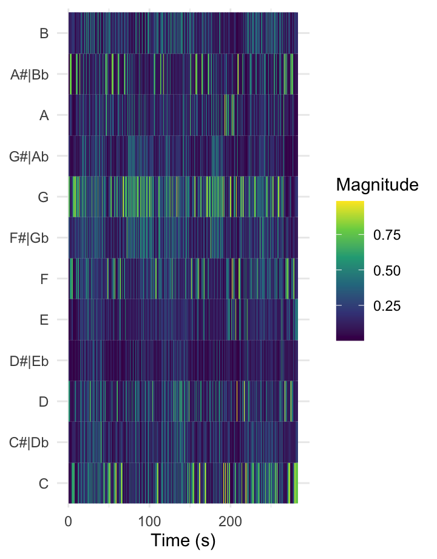
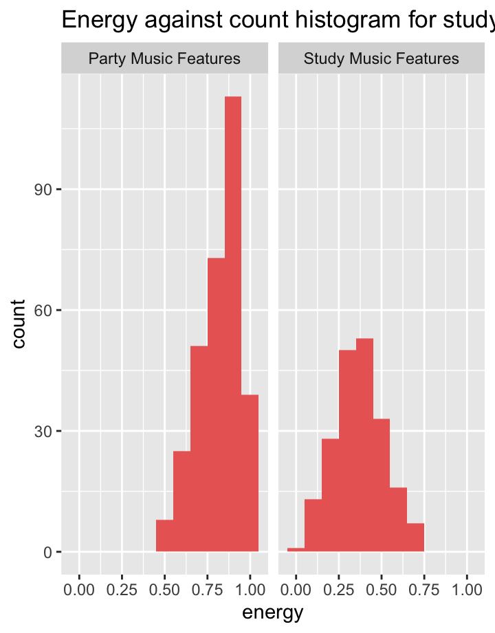
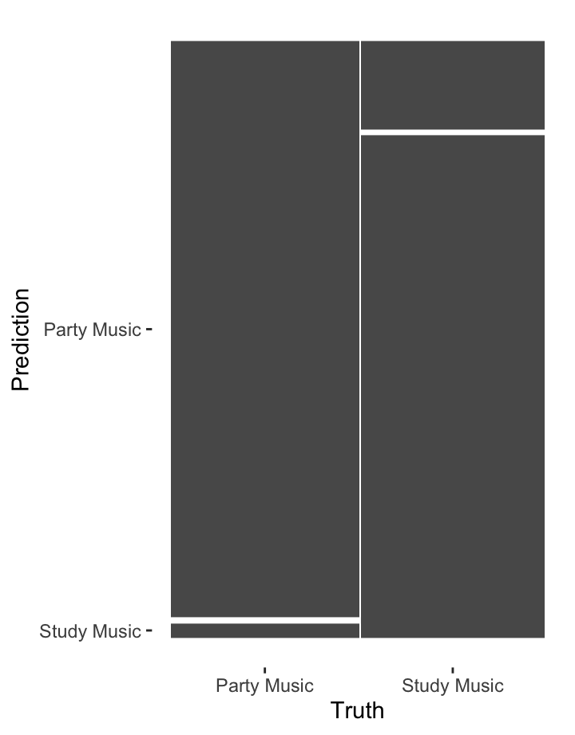
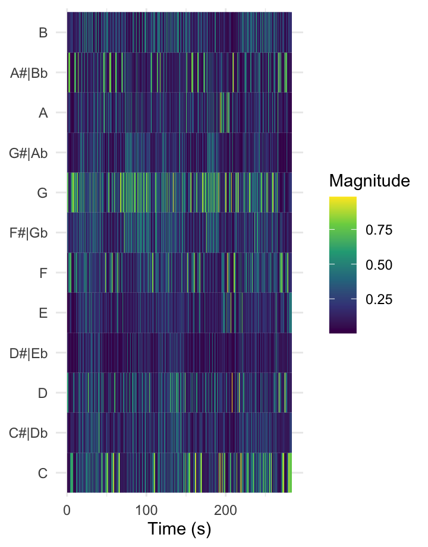
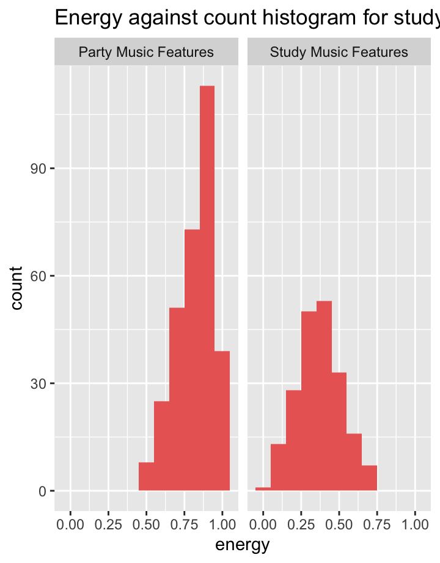
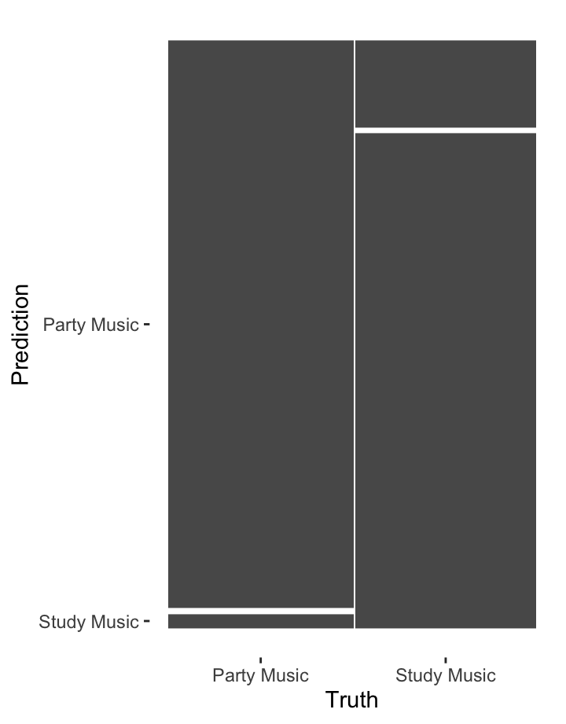
Introduction
Introduction
Introduction
The corpus I have chosen includes two different playlists. One playlist is made to be a study playlist, that would include music that is supposed to let you have a great focus in order to be studying well. The other playlist would be a party playlist, one that is made for parties to increase people their energy. I chose it because I always try to use study playlists when I realize that I am having a bit of trouble trying to stay focused while studying. I want to find out through research whether there would be a measurable difference between the two different playlists. I think what is very interesting about this research, would be to find out what is the exact thing that makes you feel more focused, and what the exact thing is that increases your energy when listening to a party playlist. The comparison points in my corpus are that that the study playlist has more of instrumental and calm music, where the party playlist includes songs with much more energy, and much more intense instruments. I expect the two playlists to be somewhere similar, because in some way they are trying to increase something in the human brain (focus in playlist 1, and energy in playlist 2). Something I definitely do not expect similar in the two playlists is the sort of vibe the two playlists include. There is definitely a well-known difference between the two playlists, because otherwise people would not use them. People usually use study playlists intentionally, knowing they want to increase their focus. Party playlists are usually used when people want to get in a party mood, or they will be used on a party itself. As said earlier, what would be definitely typical about the study playlist is the instrumental aspect. Also, they would have rather calm music that would not easily distract you from what you are trying to focus on. In a party playlist you will probably find less of those calm and bland songs. (Which obviously depends on the chosen playlist). The party playlist will have rather songs with more instruments, a high presence of a bass and even remixes.
Analysis
Histogram of Tempi for Party Music and Study Music features
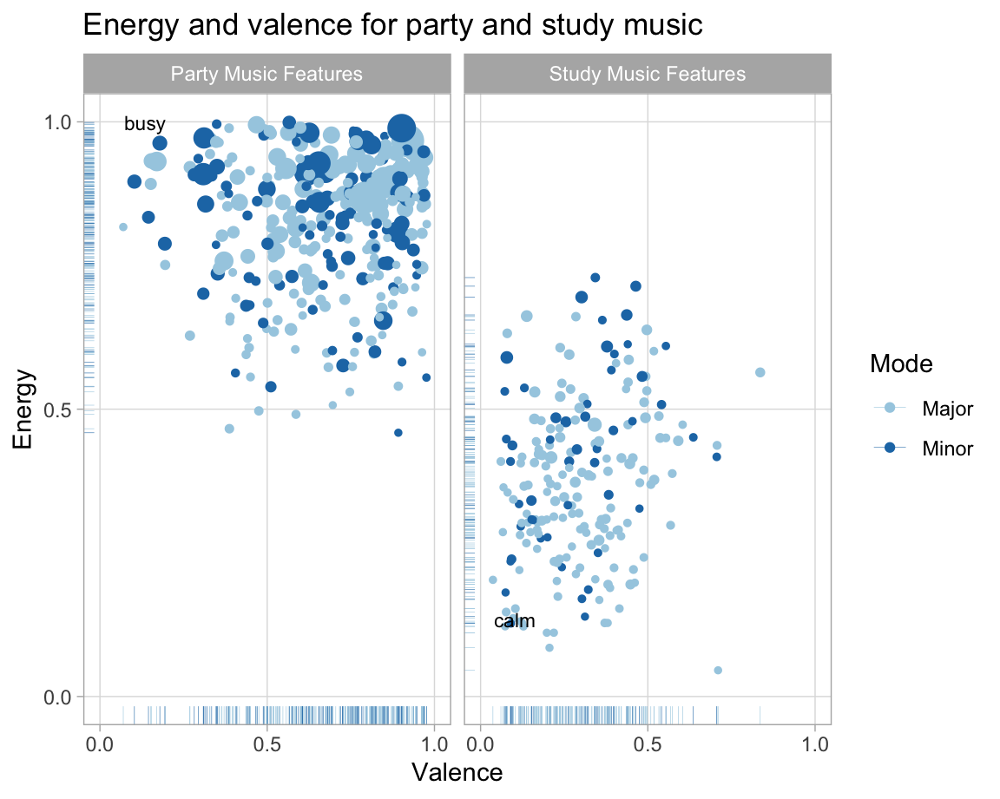
Tempi for Party Music and Study Music features
The count for the party music lies much higher than for the study music. The party music is generally busier than the study music, so this is as expected. The tempo for the study music are distributed over a wider region than for the party music. For the study music the range is 25-215 BPM, but for the party music the range is 55-200 BPM. I also expected this, because usually for study music there is a wide variety of tempi in the songs, but also between the different songs.
Tempogram for the party music outlier
Tempogram for Little Do You Know by Alex & Sierra
With the use of onsets of every segment we are able to generate Fourier tempograms. This is a cyclic tempogram for an outlier for party music, based on the piece Little Do You Know by Alex and Sierra. This song is one from the study music playlist. The tempogram is an attempt to use Spotifys API to analyse the tempo of this song. Analysing the tempogram, the tempo is estimated around a 150 BPM, with a few outliers. I expected the outliers, because the tempo of the song is definitely not consistent, as it changes noticeably. I did expect the BPM to lay higher. When comparing this tempogram to our next tempogram, the one for a party song, has a lower BPM. I would intuitively correlate a higher BPM with a busier song, but in this case it appears to not always have to be a busy song. It can also be a slow song, but with a lot of beats that lead to a high BPM.
Tempogram for the study music outlier
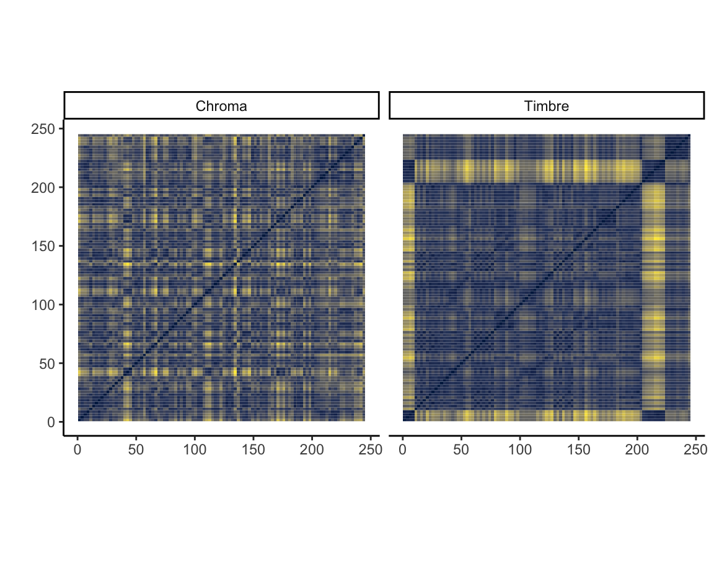
Tempogram for Beat It by Michael Jackson
With the use of onsets of every segment we are able to generate Fourier tempograms. This cyclic tempogram is an outlier for study music, based on Beat It by Michael Jackson. This song is originally from the party music playlist. The tempogram is an attempt to use Spotifys API to analyse the tempo of this song. This song seems to have a strong estimation for the BPM, which is a ~140 BPM as it appears as a strong line. I definitely did expect a steady BPM, since throughout the song I consistently sense the same tempo. I also expected the BPM to be a bit higher, maybe above the 160 BPM, because when I listen to the song I feel like there is a high tempo in it.
Tempo curves and self-similarity matrices comparison

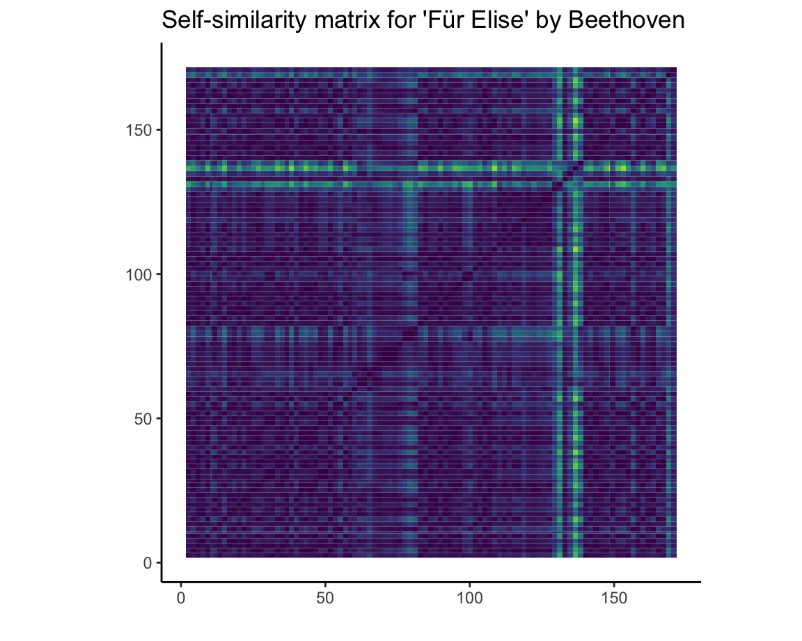
Tempo curves and self-similarity matrix comparison
The tempogram and the self-similarity matrix for Fr Elise by Beethoven show similarities. Both show the structure of the song. The way how we see that the tempo is visualized in the tempogram, is visible in the same way in the self-similarity matrix. Both visualizations analyse the same tempo for the song. In the self-similarity matrix, the outliers are more clear to see than in the tempogram.
Keys for Party Music and Study Music features
Keys for Party Music and Study Music features
This histogram shows the variety of keys, weighted to each other, for party and study music features. It is clear that for the study music features the C major is the most common. For party music it is also very clear that the G major is the most common.
Chordogram for the party music outlier
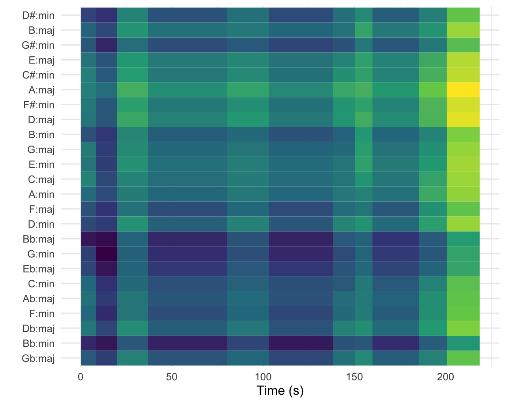
Chordogram for Let It Go by James Bay
This is the chordogram for the outlier from the party music playlist. I used a song from the study music playlist, and chose the song Let It Go by James Bay.
The chordogram visualizes the chords by using pitch templates, in this case from the song Let It Go by James Bay. Each chord is represented by a colored bar, and this is spanned over a certain amount of time. As proceding to the right and going further in time, it is visible that the identified chords with colored bars change along.
The detected chords in this song include D minor, B major, G minor, E major, C minor, A major, F minor, D major, B minor, E minor, and even more. The very first seconds of the song resulted into something very noticeable way in the chordogram. When listening to the song it has a low magnitude of a lot of chords that you can clearly hear. Further into the song, most of the chords stay consistent and contain a higher magnitude.
Chordogram for the study music outlier
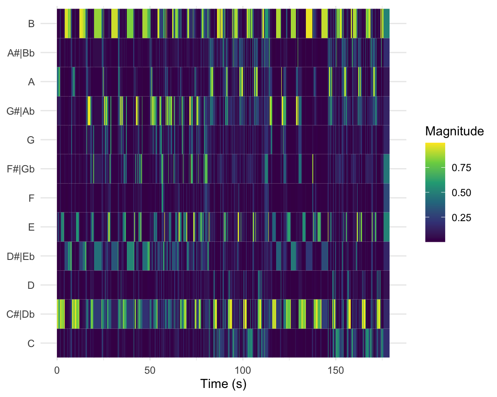
Chordogram for the Temperature by Sean Paul
This is the chordogram for the outlier from the study music playlist. I used a song from the party music playlist, and chose the song Temperature by Sean Paul.
The chordogram visualizes the chords by using pitch templates, in this case from the song Temperature by Sean Paul. Each chord is represented by a colored bar, and this is spanned over a certain amount of time. As proceding to the right and going further in time, it is visible that the identified chords with colored bars change along.
The detected chords in this song include D minor, B major, G minor, E major, C minor, A major, F minor, D major, B minor, G Major, and even more. Towards the end of the song, the last few seconds of the song resulted into something very noticeable way in the chordogram. When listening to the song it has a low magnitude of a lot of chords that you can clearly hear. In the chordogram it is clear and well-defined to see where the chorus is as it repeats. The rest of the song seems to stay very constant. Towards the end of the song, from 200 seconds, the last few seconds of the song seem to have a lower magnitude than the rest of the song.
Incorporating the low-level audio analysis features at the playlists level
Variation in tempo for study and party playlist
The strategy
This is a strategy to incorporate the low-level audio analysis features at the playlist level. We take look in both of the playlists we have in the corpus, the party music playlist and the study music playlist. Lets start with visualizing the difference between Spotifys Sound of playlists for party music and study music. First, we load the playlists. We fetch the low-level features for every track in this playlist, but we will limit ourselves to 30 tracks from each playlist to mantain a fast operation. From this we get results that make a heavy use of list-columns.
Mean Tempo
The mean tempo for the study music seems to be much more distributed over the entire graph (between 70-180 bpm), where the party musics mean tempo seems to be more concentrated (between 90-140 bpm).
SD Tempo
The same goes for the SD tempo, the SD tempo for the study music seems to be more distributed, the variation is pretty wide. On the contrary, the party musics SD tempo is very concentrated, with a few outliers.
Duration
The duration for both the party music and the study music seem to both have a variation for the difference in duration. But here again, it is well-clear that for the study music there is more variation in the duration than for the party music.
Volume
For the party music, the majority of tracks seem to have a higher volume. For the study music, the higher volume tracks also occur, but it seems like most of the tracks have a one of the lower dBFS instead of the highest one in the legenda.
What is the difference in energy between party and study music?
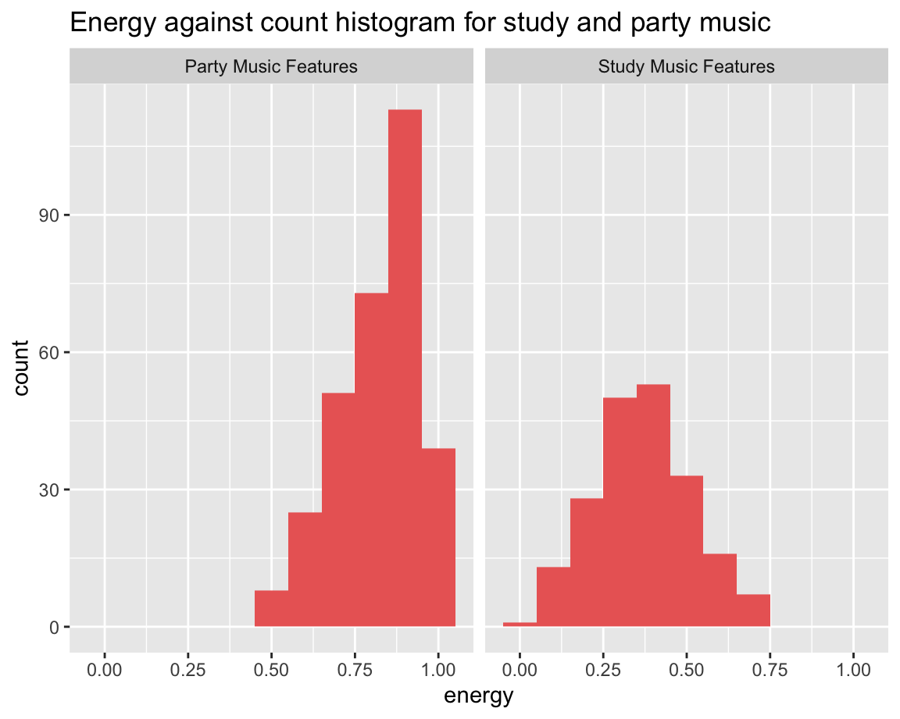
Energy against count histogram for party and study music
The difference in energy distribution between party and study music is very well shown in this histogram. Study music its energy has a bigger distribution on the lower side of the enrgy, where the party music has its bigger distribution on the higher energy side. The most common count for party music, is almost the least common count for study music and vice versa.
Energy and valence distribution for party and study music features
Energy and valence distribution for party and study music
As expected, for the party music the energy level is concentrated higher than for study music. Also, the party music is more concentrated towards the higher valence side, and the study music is more concentrated towards the lower valence side. This makes sense, because most study music are slow songs, and slow songs are often linked to sad songs. Low valence songs indicate more towards sadness, where high valence songs indicate more towards happiness. Study music has more majors in its plot, and party music has more minors in its plot. Something that is interesting to see is that party music includes more minors, which also seem to be slightly bigger, and study music includes more majors, which seem to be slighty smaller. Minors have more darker sounds, and majors have more of brighter sounds. The reason for party music including more minors, is that the darker sounds can imply to a swingy rhythm/energy, which would not exactly make you think of party music but it offers a contrast in the music, which is often found in party music.
Interactive energy and valence distribution
Energy and valence for party and study music
As expected, for the party music the energy level is concentrated higher than for study music. Also, the party music is more concentrated towards the higher valence side, and the study music is more concentrated towards the lower valence side. This makes sense, because most study music are slow songs, and slow songs are often linked to sad songs. This is an interactive plot, when hovering over the plot, in addition to the energy and valence, also the track popularity, the track name and danceability are shown.
Chromagram for the party music outlier
Chromagram for the party music outlier
This is the chromagram for the outlier from the party music playlist. I used the song from the study music playlist, and chose the song Get You The Moon by Kina and Snw. This song starts very slow and monotonous. It only has a few sounds on the piano. From around 80 seconds until around 110 seconds, this changes, and more of the piano jumps in. From around 145 seconds these jump in again until the end. All of this is perceptible in the chromagram, because around these periods D pitches have a higher magnitude than over the rest of the song.
Chromagram for the study music outlier
Chromagram for the study music outlier
This is the chromagram for the outlier from the study music playlist. I used the song from the party music playlist, and chose the song Scream & Shout by will.i.am and Britney Spears.
Ceptogram for the party music outlier

Ceptogram for the party music outlier
This is the ceptogram for the outlier from the party music playlist. Here again I used the same outlier as for the chromagram for party music. I used the song from the study music playlist, and chose the song Get You The Moon by Kina and Snw.
Ceptogram for the study music outlier
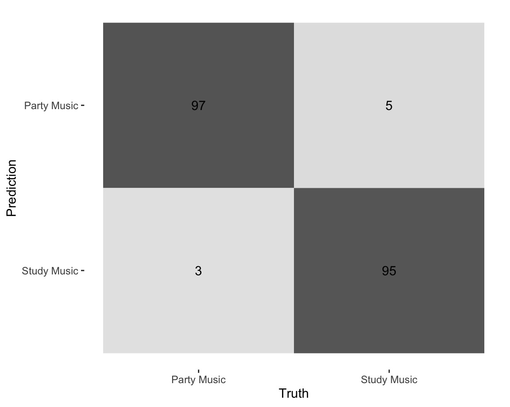
Ceptogram for the study music outlier
This is the ceptogram for the outlier from the study music playlist. Here again, I have used the same outlier as for the chromagram for study music. I used the song from the party music playlist, and chose the song Scream & Shout by will.i.am and Britney Spears.
What is the structure of Pon de Replay by Rihanna?

Structure for Pon de Replay by Rihanna
These two matrices are the chroma vs timber based matrices for Pon de Replay by Rihanna. The matrices illustrate pitch- and timbre-based self-similarity in this song. These are needed to understand the structure of the song.
What is the structure of Cant Lie by Ali Gatie?
Structure for Cant Lie by Ali Gatie
These two matrices are the chroma vs timber based matrices for Cant lie by Ali Gatie. Both of these matrices illustrate pitch- and timbre-based self-similarity in this song. These are needed to understand the structure of the song.